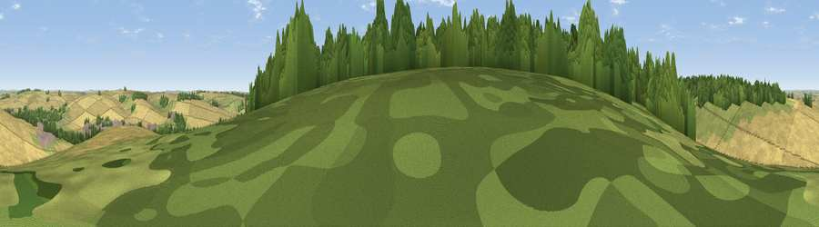

Heath Hill
#32284 in England · top 56% of its area beats it · near South NewtonThe view, rendered

A 360° render of this exact spot computed from the terrain model, tree cover and land cover — summer colours, afternoon light, calibrated against photographs of famous viewpoints. Real trees, hedges and buildings will differ in detail.
The panorama
Grey silhouette: terrain skyline in each direction (720 bearings, Earth curvature and refraction included). Dashed green: skyline with trees (+15 m) and buildings (+8 m) as obstacles. Blue strip: how far the ground is visible on each bearing.
Where the view opens
Wedge length = distance to the farthest visible ground on that bearing (vegetation-aware). Rings at 10, 25 and 50 km.
What fills the view
55% cropland · 22% woodland · 22% grassland · 1% built-up
Angular shares of the visible panorama (visual magnitude), not map area. Landscape diversity 0.46 (0–1 Shannon).
Key numbers
More beautiful places nearby
The staircase of upgrades: each row has a higher view potential than everything closer. Driving times are estimates from straight-line distance, calibrated against real road routing — check an actual route before setting out.
| Place | Direction | Drive | Score |
|---|---|---|---|
| Viewpoint near Great Wishford | NNW · 1 km | ~3 min | 45.4 |
| Viewpoint near Great Wishford | NNW · 2 km | ~5 min | 49.8 |
| Smithen Down | NE · 3 km | ~7 min | 56.3 |
| Viewpoint near Burcombe | SSW · 4 km | ~10 min | 56.9 |
| Bishopstone Down | SSW · 5 km | ~10 min | 57.6 |
| Hydon Hill | SW · 6 km | ~13 min | 61.2 |
| Marleycombe Hill | SSW · 12 km | ~23 min | 63.3 |
| Viewpoint near Bulford | NE · 15 km | ~27 min | 70.3 |
51.10282, -1.89285 · source: osm peak · position refined by local search. Computed location — check access rights before visiting.